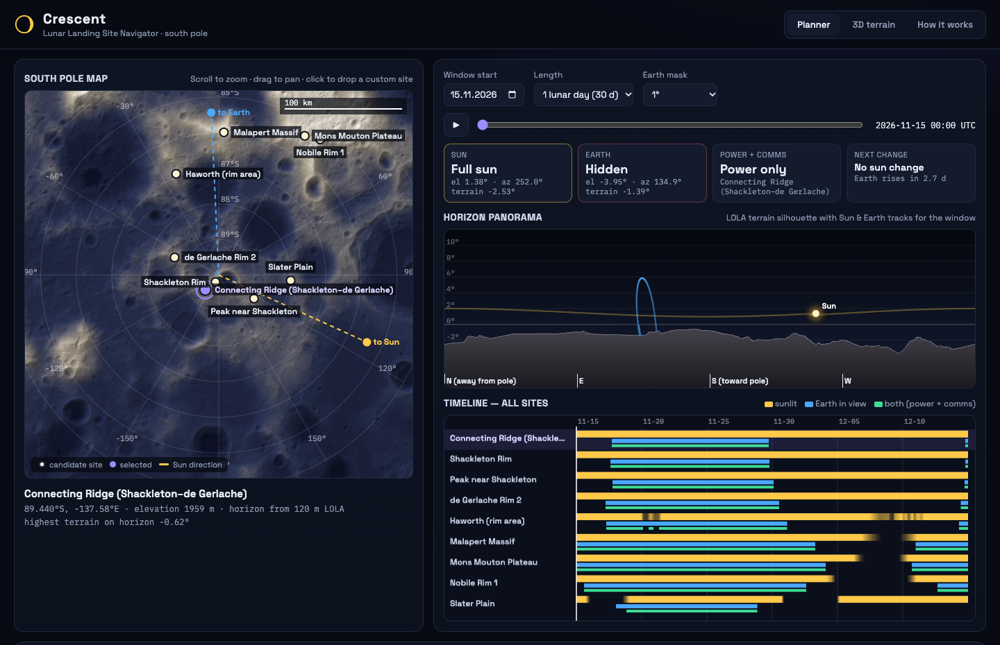
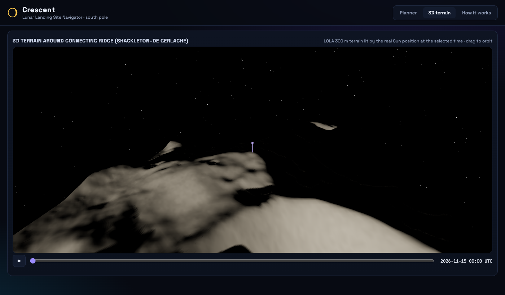

Pick a south-pole landing site and date in seconds. See where the Sun gives power and where Earth stays in view.
Team Crescent Dev · Universal Event · Kazakhstan
Harun Kalmakhanuly · Alizhan Audanbekov · Nurali Dauletbaev · Bexultanov Nurali · Nurmagambet Arnur · fakyoglu

1 · Terrain horizon. From each site we cast 720 rays across the LRO LOLA 120 m polar elevation model out to 440 km, including the Moon's curvature.
2 · Sky. Hourly sub-solar and sub-Earth points for 2026–2030 come from JPL Horizons (DE441) in the MOON_ME frame, the same frame as LOLA. We correct for the site's 1,737 km parallax.
3 · Metrics. Sunlight = fraction of the solar disk above the terrain. Comms = Earth above terrain + antenna mask. We track the longest night and the longest communication gap.

| Site (near NASA candidate region) | Sunlit | Earth in view |
|---|---|---|
| Connecting Ridge (Shackleton–de Gerlache) | 86.2% | 50.8% |
| Shackleton Rim | 85.6% | 49.6% |
| de Gerlache Rim 2 | 81.9% | 54.9% |
| Mons Mouton Plateau | 68.8% | 86.1% |
| Malapert Massif | 67.6% | 79.3% |
| Haworth (rim area) | 51.1% | 59.7% |
Sites near the pole get the most sunlight. Sites closer to the Earth-facing side keep Earth in view longer. These match published LOLA illumination studies, and Crescent lets you pick the balance and the dates.
Rank sites with their own weights. Find dates when a 6.5-day stay gets ≥95% sunlight and the most Earth contact. Export hourly CSV.
The 3D terrain lit by the real Sun and the horizon panorama make low sun angles and libration easy to see in class.
A free browser link with no install or login, and a plain-language "How it works" page.
Try it: open Crescent